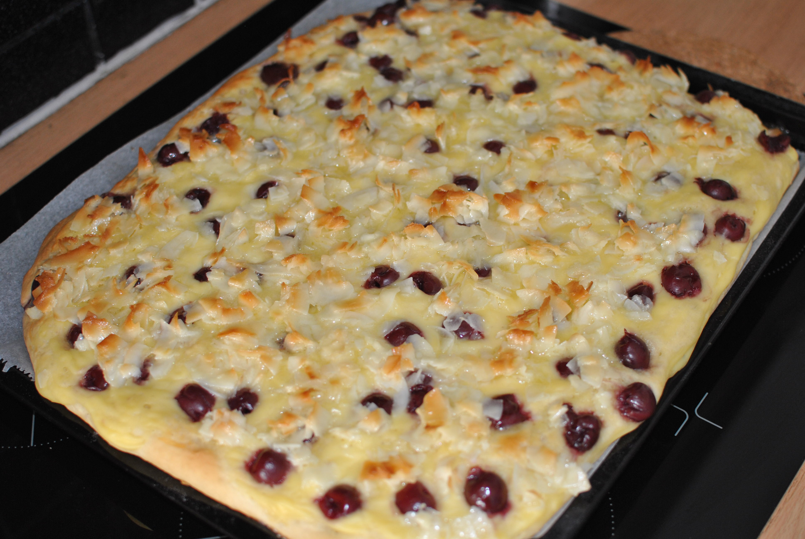

Kokos-Kirsch-Kuchen

- Zubereitung: ca. 60 Minuten
- Backzeit: ca. 30 Minuten
- Für 24 Stücke
Zutaten
- 750 ml Milch
- 500 g Mehl
- 1 Würfel Hefe
- 200 g Zucker
- 200 g Butter
- 1 Ei (Größe M)
- 100 g Schlagsahne
- 200 g Kokos-Chips
- 1 Pck. Vanillepuddingpulver (für 500 ml Milch)
- 50 g Kokossirup
- 1 Glas Schattenmorellen (Abtropfgewicht 370 g)
Zubereitung
- 250 ml Milch leicht erwärmen. Das Mehl in eine Schüssel geben, in die Mitte eine Mulde drücken. Die Hefe hineinbröckeln und mit 3-4 EL der lauwarmen Milch sowie ca. 10 g Zucker verrühren. Den Vorteig mit etwas Mehl bestäuben und an einem warmen
Ort zugedeckt 15 Minuten gehen lassen.
- Die Hälfte der Butter schmelzen. Die restliche warme Milch (200 ml) dazugeben, mit 90 g Zucker und dem Ei zu dem Vorteig geben. Alles verkneten. Den Teig an einem warmen Ort weitere 30 Minuten ruhen lassen, bis sich das Teigvolumen verdoppelt hat.
- Inzwischen für den Belag die Sahne mit 100 g Butter und 100 g Zucker aufkochen. Die Mischung zwei Minuten lang köcheln lassen. Die Kokos-Chips einrühren. Das Puddingpulver nach Packungsangabe mit der restlichen Milch (500 ml) anrühren, mit dem Kokossirup
mischen. Die Kirschen abtropfen lassen.
- Den Hefeteig auf einem mit Backpapier ausgelegten Blech ausrollen. Die Puddingmasse daraufstreichen, Kirschen und die Kokos-Sahne-Butter darauf verteilen. Den Kuchen im Backofen bei 180° Celsius für ca. 30 Minuten backen.